Graphic Designer/Video Editor/Content Creator
Newcastle-based graphic designer, video editor, videographer and social media content creator with 25 years crafting powerful visual stories for businesses across the Hunter and beyond.
Logos, branding systems, brochures, programs and packaging. Hover over any piece for context.
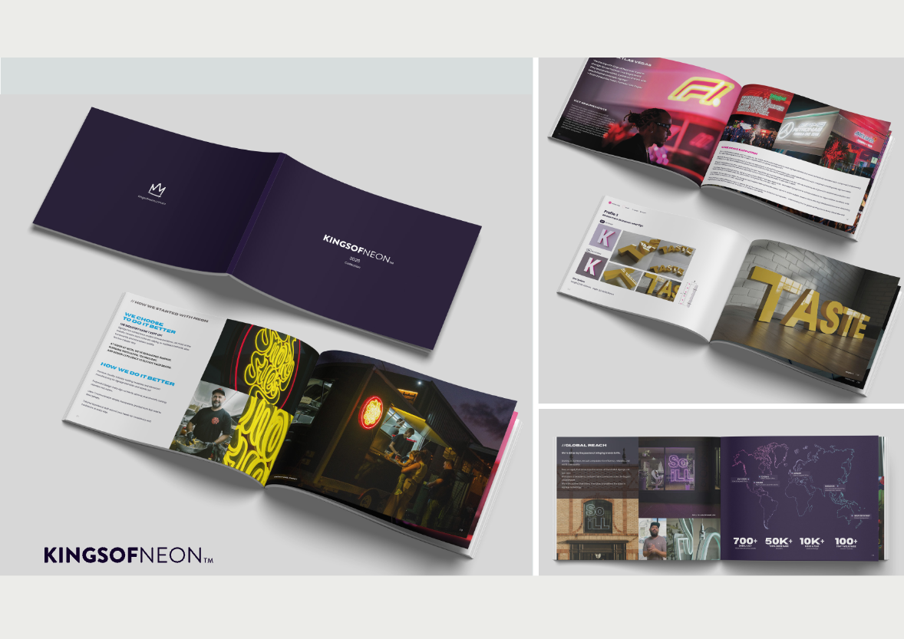
Kings of Neon, 2026 Catalogue
Catalogue · Branding
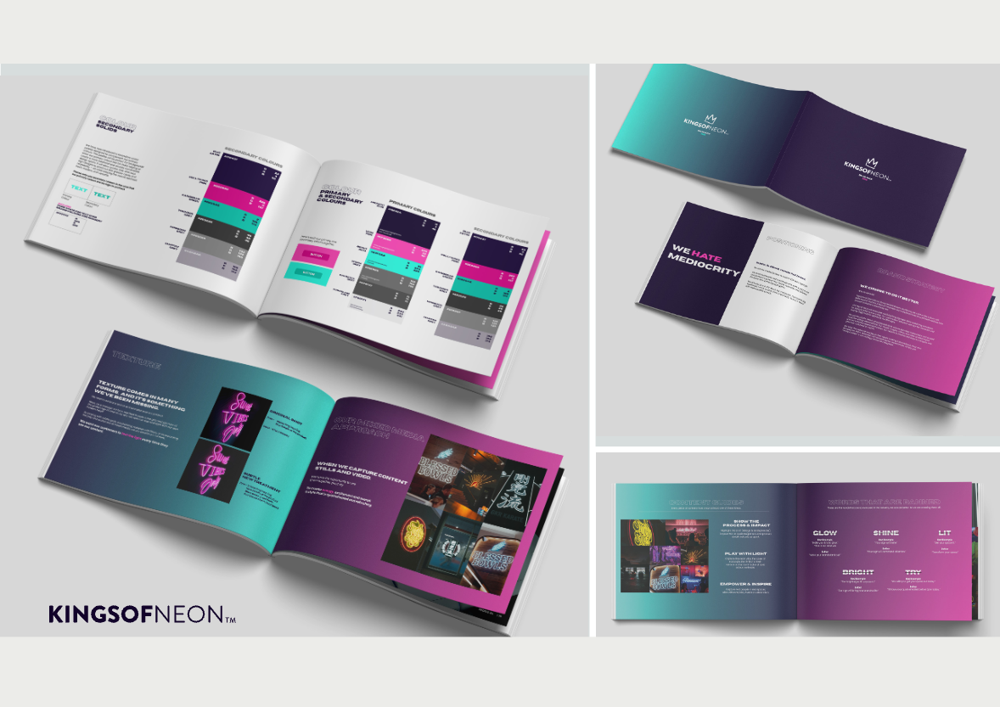
Kings of Neon, Brand Booklet
Brand · 2025
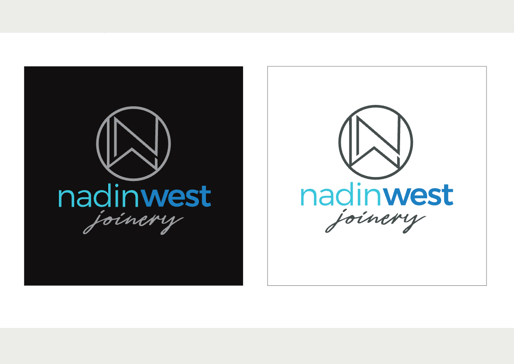
Nadin West Joinery, Re-brand
Identity · Branding
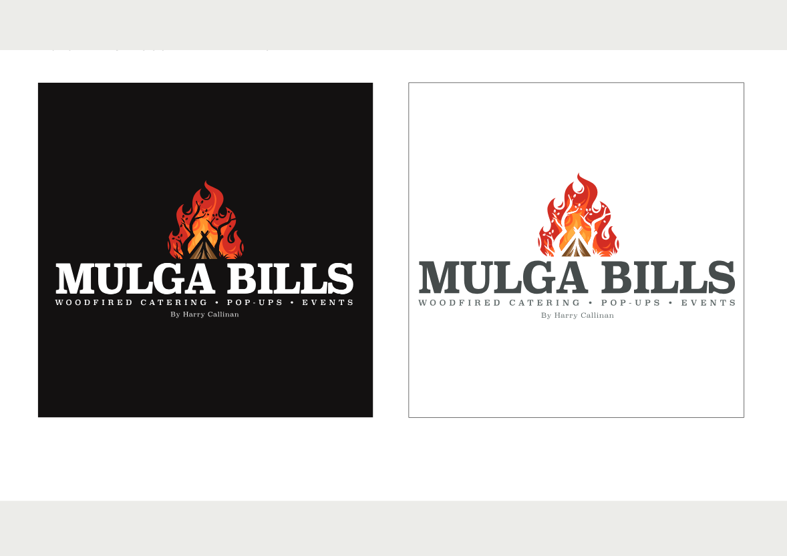
Mulga Bills
Identity · Hospitality
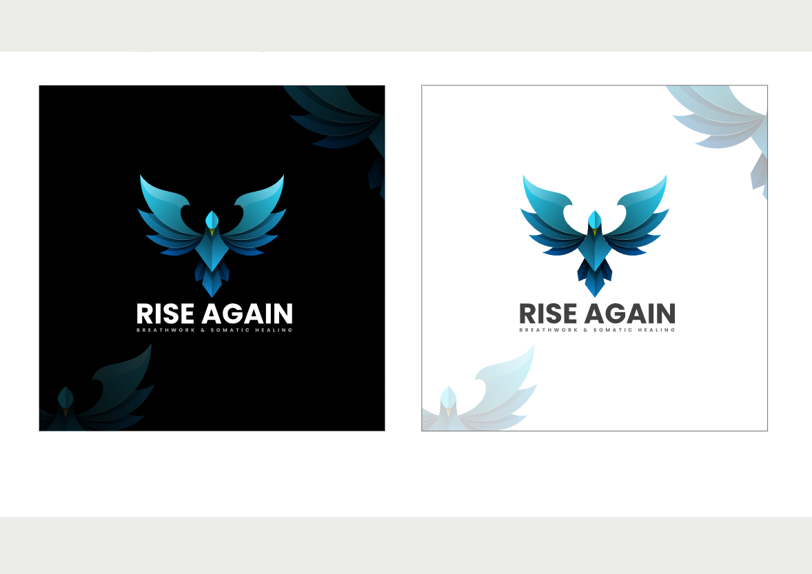
Rise Again Breathwork, & Somatic Healing
Identity · Wellness
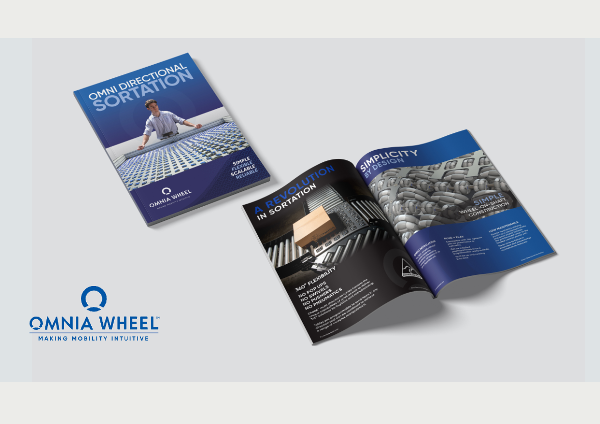
Omnia Wheel, Directional Sortation
Brochure
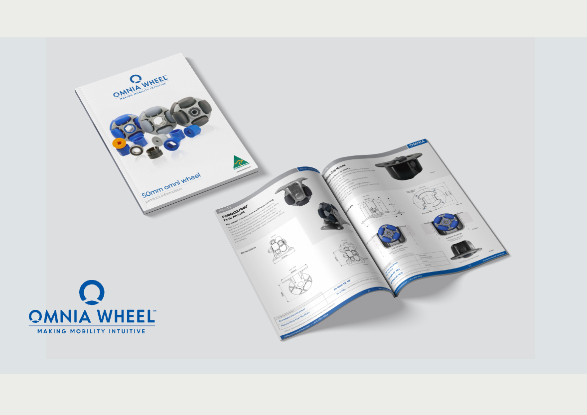
Omnia Wheel
Product Brochure
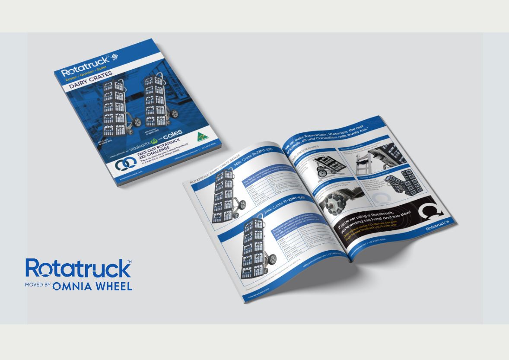
Rotatruck, Dairy Crates
Packaging
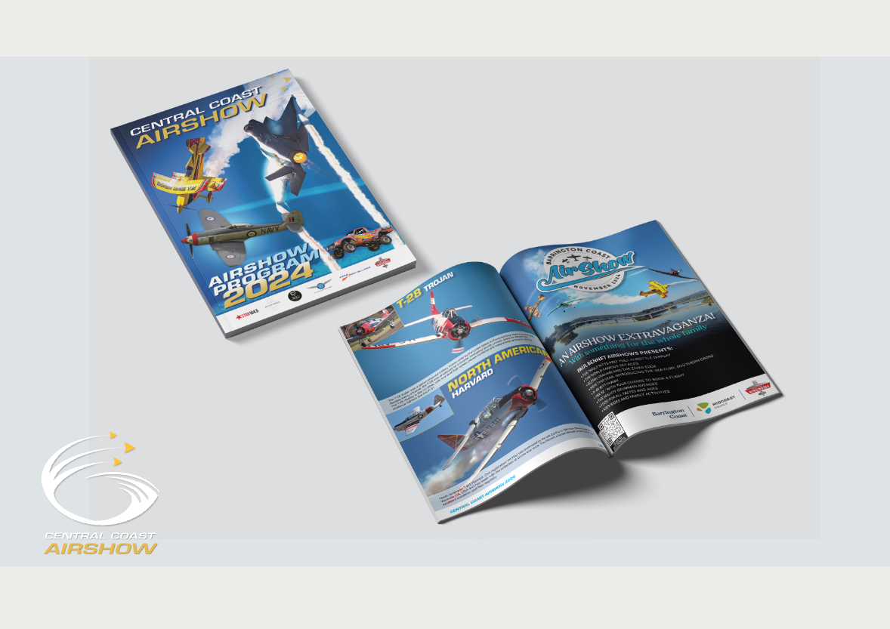
Central Coast Airshow
Program · 2024
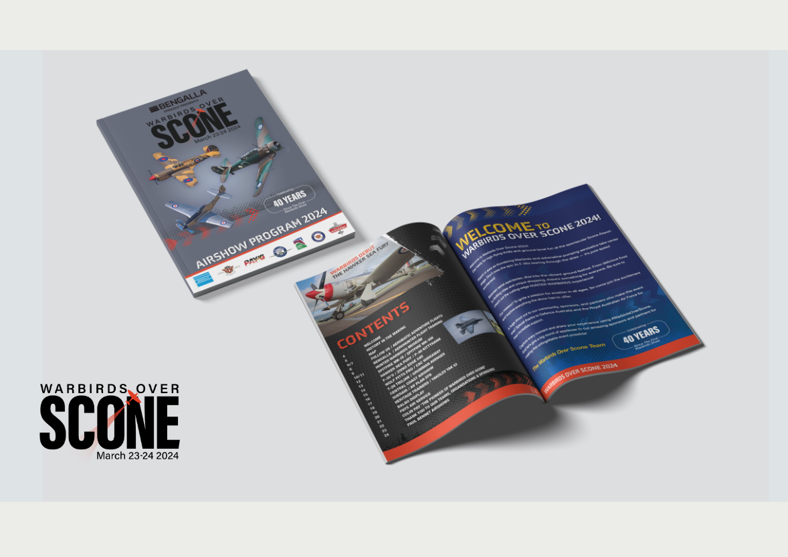
Warbirds Over Scone
Airshow Program
A view into 25 years across motion graphics, video editing, broadcast and brand work.
MOTION DESIGN SHOWREELA curated mix of projects from across my career, motion design, video editing and sound design woven together into a single reel.
A multi-disciplinary studio of one, based in Newcastle, NSW and working with businesses across the Hunter, Lake Macquarie, the Central Coast and Australia-wide.
Brand identities, logos, print, brochures, packaging and signage built to last and to scale.
Story-led editing, colour grading and sound design across broadcast, social and brand films.
On-location filming for events, products and brands, from a single camera to a full crew.
Animation, titles and motion graphics that give a brand energy and a visual identity it can own.
Paid ads and organic content, shot, edited and designed to perform across every channel.
Considered, cohesive brand systems, from first conversation through to production-ready assets.
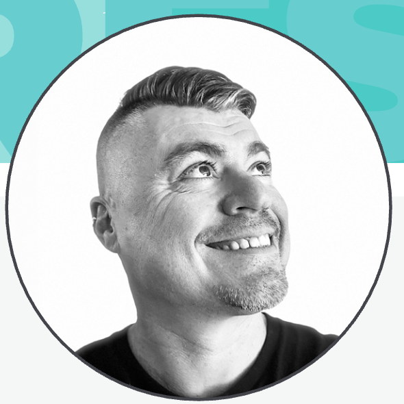
"FREEDOM LIES IN BEING BOLD."
Hello,
I'm a highly skilled motion designer, video editor, videographer, graphic designer, and client liaison with 25 years of experience across the design, marketing, and video industries. I'm passionate about design, storytelling, and creating content that connects with audiences and delivers meaningful results.
I bring a proactive, creative, and solutions-focused approach to every project, while genuinely valuing collaboration and the ideas of others. I believe the best outcomes come from asking thoughtful questions, staying curious, and continually looking for better ways to work.
For me, learning is an ongoing process of asking:
"What am I doing? Why am I doing it this way? Is there a better approach? How can I continue to grow? And how can I create the best possible experience for clients while staying true to my values and achieving strong results?"
This mindset has helped me build lasting relationships, solve problems creatively, and deliver work that is both effective and engaging.
I'd love the opportunity to bring my experience, creativity, and enthusiasm to your team.
Started as a Junior Graphic Designer. Grew into Motion. Now working across the full spectrum as a multi-disciplinary Multimedia Designer. Brand identity, print, photography, motion, and everything in between. Content that works.
Kings of Neon
Content creation across all channels, social, videography, video editing, graphic design, and the use of AI tools for photo and video manipulation. Front-end web design and CMS, print and signage design, contributing to the company's rebrand.
Paul Bennet Airshows
High-impact content and marketing assets for the company and all supported airshows, photography, videography, video editing, social media, and print. Captured on-site content at every airshow and managed front-end web, signage and brand development.
Omnia Wheel
Sole designer for content creation across all channels. End-to-end ownership: filming, photography, video, web design (front end), print media and signage for an Australian company making multi-directional wheels with national and international distribution.
Independent · Freelance
Direct client work across motion graphics, broadcast, digital marketing and social, adapting tone and treatment for each brand and platform.
Out of the Square Media
Started as a graphic designer (print, catalogues for Camera House and Paxtons, logos), then evolved into broadcast graphics, Flash animation, web design and video graphics. Self-taught After Effects in the early 2000s. Experimentation has always been how I learn. Clients included Perisher, Northern NSW Football, Newcastle Airport, Tamworth Country Music Festival, Greater Bank, Nikon, the Catholic Schools Office (Dancing with the Stars), the Cancer Council and many more.
Brilliant Logic
First role out of the TAFE Hunter Design Faculty diploma. Secured full-time employment two weeks before completing the course.
Software I use daily, communication tools I work in, and the soft skills that make collaboration work.
People I've worked alongside.
They're happy to chat about my work.
Drop me a line. I'm looking for full-time employment.